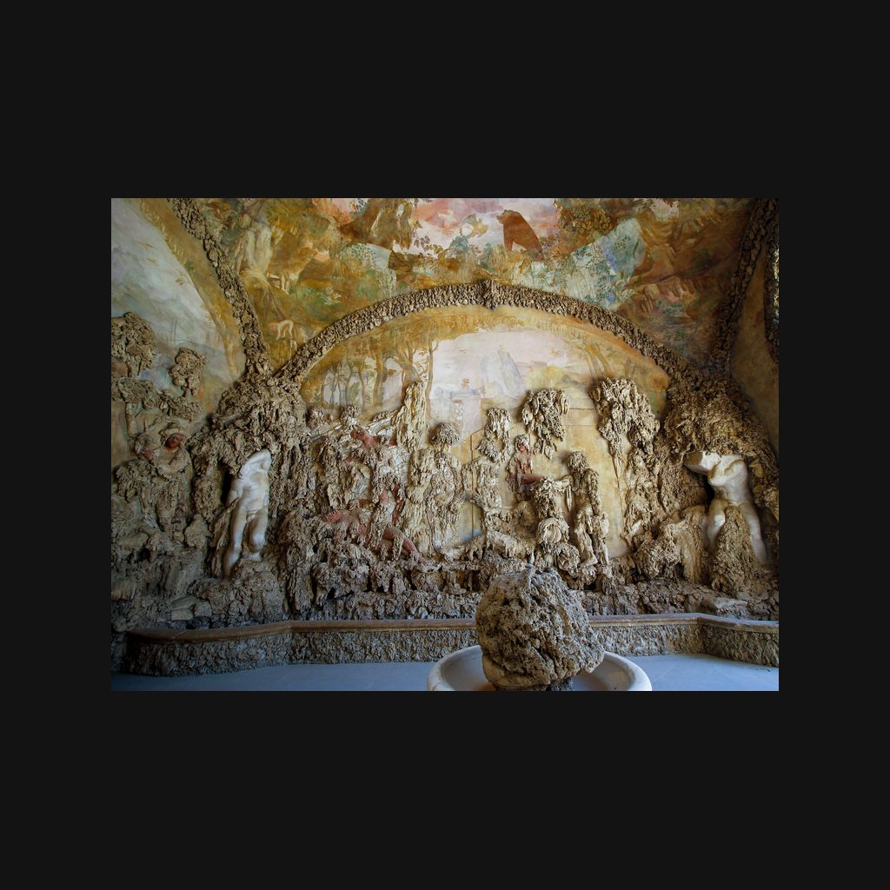

布翁塔倫蒂岩洞
瓦薩里、布翁塔倫蒂 · 1557—1587年
Grotta del Buontalenti
導賞節錄
波波里花園北端，瓦薩里走廊接入嘅位置旁邊，有座幾特別嘅人工洞窟，叫「大岩洞」，亦叫「布翁塔倫蒂岩洞」。佢主要起喺地面上，將建築、繪畫、石灰質結殼同雕塑放埋一齊。建造年代係一五五七至一五八七年，入面嘅雕塑同噴泉就繼續布置到大約一五九三年。
呢度最初其實係供水設施。一五五一年，吉內夫拉泉嘅引水工程已經開緊工，啲水先供應花園，再供應舊宮，所以喺呢度設咗蓄水設施，來水唔夠嗰陣就用得着。一五五七年，瓦薩里接手呢項工程。後來，設施失去咗原本嘅功能，法蘭切斯科一世決定將佢改成岩洞，由建築師布翁塔倫蒂喺一五八三年至一五八七年主持改建。布翁塔倫蒂係佛羅倫斯晚期樣式主義嘅重要人物，亦為美第奇宮廷設計節慶、戲劇同煙火。
— 廣東話講稿 · Artvery
完整講解約 4 分鐘，可在 Artvery App 收聽。粵語、台灣國語、內地普通話三種語音，館內對準作品即可識別播放。
即將登陸 App Store
App 即將推出，敬請期待。推出後免費下載，每座博物館單獨購買，一次購買永久使用。
作品資料
- 作者
- 瓦薩里、布翁塔倫蒂
- 年代
- 1557—1587年
- 位置
- 碧提宮 · 波波里花園